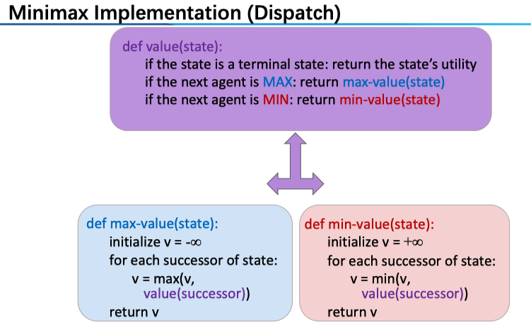
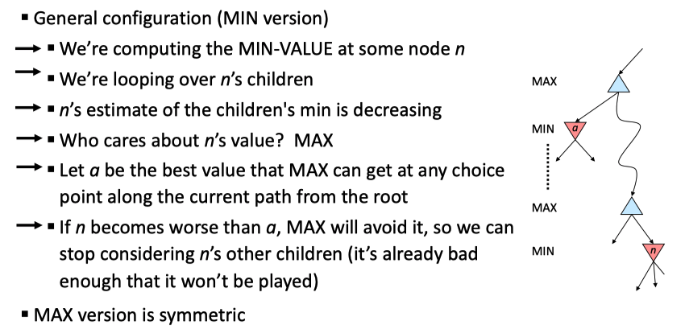
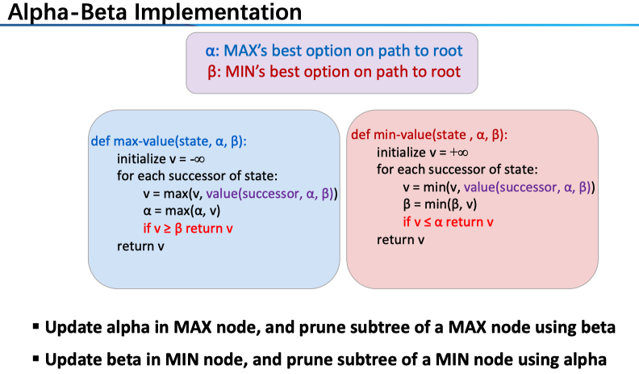
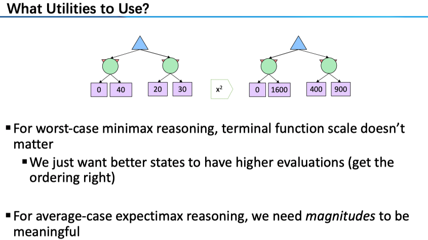

博弈 Game 的分类维度
- Deterministic or stochastic?
- One, two, or more players?
- Zero sum?
- Perfect information (can you see the state)?
Adversarial Search
对抗搜索 Adversarial Search 关注的是 perfect information, deterministic, two players, zero-sum, alternate turns 的博弈。典型的例子有 Tic-tac-toe, chess, Go, Gomoku 等。
在双人博弈的场景下，由于是零和游戏一方分数为正，则另一方则必为相应的负数。这样的话，我们可以给场上的局势统一「打分」，一方欲求最大化该分数，而另一方意图最小化该分数。例如对 MAX 节点来说
\[
V(s)=\max_{s'\in successor(s)}V(s')
\]
这样的话，我们给出 Minimax Search 的定义：
A state-space search tree. Players alternate turns
Compute each node’s minimax value: the best achievable utility against a rational (optimal) adversary
具体到算法层面，对于一个特定的节点，我们可以给出一个统一的求其值的形式

对于一个 MAX 节点来说，玩家希望最大化分数，所以肯定会选择最有利的那一个策略（后继中分数最高的），对于 MIN 节点同理。
Note：我们对于「局势」的打分一般不是根据最终的结果来决定的（例如若 A 胜利则给 1，A 负则设为-1），因为受到资源的约束我们没法搜索很深（显然会采用 DFS，时间空间复杂度分别为 \(O(b^m )\), \(O(bm)\)，对于 chess 来说，b 约为 35，m 约为 100）；所以我们会给中间节点基于场上的「形势」打分，也就是说，我们采用的是 Depth-limited search，限制了搜索深度，需要 Evaluation function 对于 non-terminal positions 评分。当然，算法给出的策略的 optimal 无法保障；我们总希望越深越好，所以可以采用 iterative deepening 的策略。对于 Evaluation function 来说，理想的显然是返回这一状态的真实「价值」，但其计算就会变得相当复杂，因此其体现的是 tradeoff between complexity of features and complexity of computation；对于其我们的要求有
- Utility for a win state should be higher than a tie. (correct)
- The computation of evaluation function should be efficient. (quick)
- It should be related to the chance of wining the game. (consistent)
Game Tree Pruning
当然是最有名的 Alpha-Beta Pruning 了。其想法非常简单（然而，在具体实现中代码有难度，所以我们详细讲一下）：对于一个 MAX 节点来说，若其第一个子节点 A 返回的是 3，那么对于第二个子节点 B（注意是 MIN 节点），若 B 的第一个子节点返回的是 2，那么我们可以确定 B 的值肯定要 ≤2（因为 B 为 MIN 节点），也就必 <3，因此我们没有必要继续探索 B 的剩余子节点了。
注意到，上述是对于 MIN 节点进行的剪枝，MIN 的子节点返回的一个值与其维护的一个值（\(\alpha\)）进行比较，若小于了这个值则直接将此 MIN 节点剪去不去看剩下的子节点。上述只是一个特例，下图是一般情况

这里的逻辑是这样的：在之前的例子中我们只关注了 MIN 的父 MAX 节点，事实上我们可以「看」得更远（剪枝也就更有效率），也就是这里标识出来的两个 MAX 节点，实际上是一条 MAX 节点序列，为什么可以这样呢？这里要注意我们所维护的 \(\alpha\) 的含义，它是这条路径上 MAX 节点的最优选择。
对于 MIN 节点 n 来说，一方面，它要从它的子节点这里选出最小的那一个（Note：我们结合下图中右边的伪码来看），也就是算法中的 v，若这个值小于了 \(\alpha\) ，即这条路径上 MAX 节点的最优选择（标红行），那么我们直接返回 v（对于该 MIN 节点值的一个保守估计）。那么，关键在于 \(\alpha\) 究竟是从哪里来的呢？我们来看算法中左边的 MAX 节点的操作（注意，对于 \(\alpha\) 的更新只在 MAX 节点进行）：\(\alpha=\max(\alpha, v)\) 。分开来讨论，若 1. max 取到的是 v，那么 \(\alpha\) 就表示了该 MAX 节点在 for 循环中取到的最优结果（此前的子节点中的最优结果），在下一个循环中我们在标紫行调用了子节点的 min-value，即右边的算法；2. max 取到的 \(\alpha\) 来自本身传入 max-value 中的那个值（这里我们结合上图），也就是这条路径之上的 MAX 节点的最优选择，比如说，对于上面的那个蓝色 MAX 节点 A，我们在其左孩子取到了 3，我们把这个 \(\alpha\) 值传给了 n 的父 MAX 节点 B：老大 A 告诉小弟 B：我另一个小弟已经献给我 3 了，你如果比这个值小就甭给我拿出来丢人了，于是 B 也会拿这个 \(\alpha\) 来给其子 MIN 节点进行剪枝（也就是右边算法中标红的操作）。当然，另一方面，MIN 节点要维护一个\(\beta\) ：该条路径下 MIN 节点的最优选择，分析和上述是相一致的。

上图总结得真的完美，若还有不懂的再多看两遍，或者画一棵树自己跑一下吧。对于 alpha-beta 剪枝我们有如下说明：1. This pruning has no effect on minimax value computed for the root. Minimax values of intermediate nodes might be wrong. 对于根节点来说，我们初始化 \(\alpha=-\infty, \beta=+\infty\) 并进行搜索，注意到 alpha-beta 剪枝仅仅是把一些肯定对结果没有影响的节点删去了，因此不会影响最终的值；然而，对于中层的节点来说，alpha-beta 剪枝所给出值是在减去了一些分支的情况下得到的，这样给出的「分数」就可能不是其真值了。2. Ordering Matters 显然，若所有可剪的分支都排在最后那么对于最终的效率就没什么影响了，一般情况下，alpha-beta 剪枝可以Doubles solvable depth!
Uncertain Outcomes
主体就这些内容，后面介绍了一下非确定情况下的节点，增加了随机性：例如玩家是非理性的，或游戏本身就有随机性如 Dice，这样的话我们可以取期望。
Utilities
这部分更多是简单抽象的博弈中超脱了出来，毕竟这种情况是确定的理想的；事实上，相同的结果对于不同人的价值是不一样的，也就是效用这一概念的由来。
Utilities are functions from outcomes (states of the world) to real numbers that describe an agent’s preferences
In a game, may be simple (+1/-1)
Utilities summarize the agent’s goals
Theorem: any “rational” preferences can be summarized as a utility function
注意，我们这里讨论的并非上述的双方博弈，而是 Maximum Expected Utility 算法
\[
𝑎𝑐𝑡𝑖𝑜𝑛 = \arg \max 𝐸𝑥𝑝𝑒𝑐𝑡𝑒𝑑𝑈𝑡𝑖𝑙𝑖𝑡𝑦(𝑎|𝑒)
\]

最后再对 Utilities 的概念做一点说明，正如定义中所说它反映的是一个人的 preferences ，相较于简单的 outcomes 更具有现实性，例如一个不爱冒风险的人和一个赌徒的偏好是不同的。另外，很少有人的真正理性的，例如：Famous example of Allais (1953)
A: \([0.8,\$4k; 0.2,\$0]\)
B: \([1.0, \$3k; 0.0, \$0]\)C: \([0.2, \$4k; 0.8, \$0]\)
D: \([0.25, \$3k; 0.75, \$0]\)
Most people prefer B > A, C > D
然而，人是否真的是理性的呢？假若 \(U(\$0) = 0\)，那么 B > A 可推出 \(U(\$3k) > 0.8 U(\$4k)\)，而 C > D 则可推出 \(0.8 U(\$4k) > U(\$3k)\)——出现了两个矛盾的结果。
一下仅仅是个人感想：我们假定 utility 正是回报，那么这里例子深刻地反映了人对于概率/数字并不敏感。对于 A 和 B，3k 和 4k 刀差别不大，我们可能出于厌恶风险的原则选 B；对于 C 和 D，两者都有一定的风险，而我们对于 .2 和 .25 的区别并不敏感，这时候 4k 和 3k 刀的差距就显现出来，也就更倾向于选大一点的 C（虽然这时是一个正确的选择）。